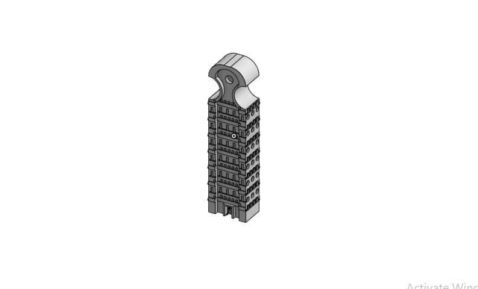

CAD Projects
Adjustable Lamp Design 3D Modeling Club at the Col. John C. Robinson American Corner, St. Mary's University, Addis Ababa, Ethiopia
Before
After
Mentored 20 Ethiopian students (grades 9-12) in an instensive 6-week Onshape program to design and 3D print an adjustable desk lamp for late-night studying.
BMX Bicycle Design 3D Modeling Club at the Col. John C. Robinson American Corner, St. Mary's University, Addis Ababa, Ethiopia
Before
After
Mentored 20 Ethiopian students (grades 9-12) in an instensive 6-week Onshape program to design and 3D print an adjustable desk lamp for late-night studying. Check out the U.S. Embassy's facebook post about our program here
House ModelArchitecutral Preservation Program with GMJA, Satchmo Center, U.S. Embassy Ethiopia
Before
After
Modeled a house for a Architectural Preservation program to display difference between modern and ancient designs.
Axum Obelisk Architecutral Preservation Program with GMJA, Satchmo Center, U.S. Embassy Ethiopia
Before
After
Built a model of the Axum Obelisk, an ancient Ethiopian monument, to promote Architectural Preservation through CAD with GMJA.Check out GMJA's article about me here
Research Projects
Rsearch Title: The Effect of Plastic Waste on the EnvironmentAndinet International School Science Fair, Addis Ababa, Ethiopia
Before
After
Built a home-made fractional distilator with a team of 4 to convert plastic waste into liquid petrol.
Rsearch Title: The Effect of light intensity on semiconductive photocatalysis EfficiencyAndinet International School Science Fair, Addis Ababa, Ethiopia
Our team

Copper(||)Oxide under microscopy
Currently researching how Copper(||)oxide can serve as a P-type semiconductor to catalyze the decomposition of water molecules under intense sunlight radiation.
Community Service
Volunteer Tutor & FundraiserKidanemeheret Children's Home, Addis Ababa, Ethiopia
Taught orphan children Math english and science and raised 25,600ETB to support the orphanage
Model UNDelegate/Secretary General/Chair, Addis Ababa, Ethiopia
Holder of 1 Best Delegate Award and 2 Outstanding Delegate Awards, Chaired the GIRA Ethiopia MUN, Sandford International School Interscholastic MUN, and the Andinet International School Interscholastic MUN
Food Cornerüç≥
Enjoy some of My gretest creations in the kitchen.Addis Ababa, Ethiopia
Tomato noodles with beef chops
Noodles with cream and salad
Alfredo Spaghetti
Chinse style beef noodles in broth
Fish with Greean beans
Golden rice with basil cream
Engineering the best home-made dishesüòã